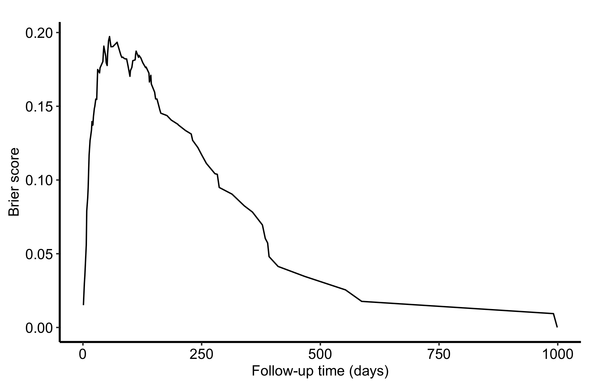

Model performance is not one question. For a binary outcome, an ROC curve asks whether predicted scores rank events above non-events across thresholds. For a right-censored survival outcome, a Brier curve asks how far predicted survival probabilities sit from observed survival status over follow-up, with censoring handled in the score.
Neither display validates transportability. And neither estimates a causal treatment effect. They assess predictions from a fitted model.
31.2 Discrimination for a binary outcome
We fit a classification forest to SynthDiabetes, the synthetic diabetes set that mlbench ships. It stands in for the Pima Indians data the package and the UCI repository both withdrew, once it emerged that the original records had been shared without the community’s consent. The replacement keeps the same 768 rows, the same nine columns and the same neg/pos outcome, so nothing below had to change. The factor levels are printed before we choose the positive class, because which_outcome = 2 means the second level, pos, in this fit.
Sample size: 768
Frequency of class labels: neg=488, pos=280
Number of trees: 300
Forest terminal node size: 1
Average no. of terminal nodes: 133.08
No. of variables tried at each split: 3
Total no. of variables: 8
Resampling used to grow trees: swor
Resample size used to grow trees: 485
Analysis: RF-C
Family: class
Splitting rule: gini *random*
Number of random split points: 10
Imbalanced ratio: 1.7429
(OOB) Brier score: 0.18490121
(OOB) Normalized Brier score: 0.73960482
(OOB) AUC: 0.77604289
(OOB) Log-loss: 0.55333008
(OOB) PR-AUC: 0.63672898
(OOB) G-mean: 0.6909735
(OOB) Requested performance error: 0.27213542, 0.19467213, 0.40714286
Confusion matrix:
predicted
observed neg pos class.error
neg 394 94 0.1926
pos 114 166 0.4071
(OOB) Misclassification rate: 0.2708333
Random-classifier baselines (uniform):
Brier: 0.25 Normalized Brier: 1 Log-loss: 0.69314718
The teaching value keeps execution bounded. Before reporting a study AUC, we would verify the error trajectory with enough trees and evaluate the model on the intended validation population.
31.3 Build and inspect the ROC object
gg_roc() defaults to OOB class probabilities for an rfsrc training fit. Its returned columns are sensitivity, specificity, and the threshold used at each point.
Figure 31.1: OOB ROC curve for positive diabetes, with false-positive rate on the x-axis and sensitivity on the y-axis
The curve runs from the lower-left to the upper-right. The red 45-degree line is chance ranking; a useful curve bows toward the upper-left. AUC is on the 0 to 1 scale, with 0.5 representing chance and 1 perfect ranking. It says nothing by itself about whether a predicted probability of 0.8 occurs 80% of the time.
For a multi-class forest, request one class index at a time and name the one-vs-rest comparison in the caption. Current rfsrc behavior does not build a multi-class object from per_class = TRUE, so explicit class-specific calls are the maintained, auditable route here.
31.4 Time-resolved survival prediction error
Now we change both the outcome and the metric. The veteran data provide a right-censored survival outcome. gg_brier() wraps the censoring-aware Brier calculation from randomForestSRC and returns one score per event time.
Sample size: 137
Number of deaths: 128
Number of trees: 300
Forest terminal node size: 15
Average no. of terminal nodes: 6.2533
No. of variables tried at each split: 3
Total no. of variables: 6
Resampling used to grow trees: swor
Resample size used to grow trees: 87
Analysis: RSF
Family: surv
Splitting rule: logrank *random*
Number of random split points: 10
(OOB) CRPS: 62.92693288
(OOB) standardized CRPS: 0.06298992
(OOB) Requested performance error: 0.30309059
plot(brier_dta) +theme_hv_manuscript() +labs(x ="Follow-up time (days)", y ="Brier score")

Figure 31.2: OOB time-resolved Brier prediction error for the veteran survival forest; lower is better
The Brier score compares predicted survival probability with whether each patient is event-free at that time. Because some outcomes are unknown after censoring, the calculation uses inverse-probability-of-censoring weighting; cens.model = "km" estimates that censoring distribution with Kaplan-Meier. Whenever randomForestSRC can do so, it uses OOB values.
Lower is better, but the curve is not a calibration curve and not a discrimination curve. It combines both properties of probabilistic prediction. The far-right tail rests on very few patients with long follow-up, so we do not read its drop toward zero as evidence of improving performance. To study calibration, compare predicted and observed risks by horizon; to study survival discrimination, use a censoring-aware concordance or time-dependent ROC analysis.
31.5 Pitfalls
Choosing the wrong positive class. Print the factor levels, then map the numeric which_outcome index to the clinical event in the caption.
Reversing the ROC axes. The plot uses false-positive rate (1 - specificity) on x and sensitivity on y. The chance line rises from (0, 0) to (1, 1).